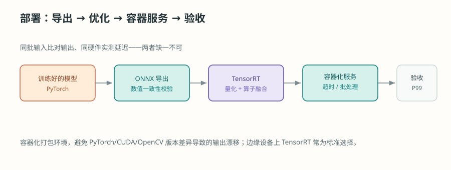
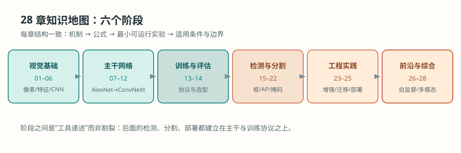

CHAPTER 28 · CAPSTONE PROJECT
综合实战项目：把 28 章组装成一个可部署系统
本章用一个“仓储分拣辅助系统”走完整流程：从业务目标推导可验证指标，按延迟与算力约束选型，让数据增强去建模真实退化，用基线锚定每一次改进，再用分场景验收与容器化保证上线一致。重点不是某个模型，而是“先定义问题、再选工具、最后用协议证明”的工程方法。
需求分析：先把指标和约束写清
项目假设：某物流中转场每天处理数十万件包裹，需要自动识别包裹类型（纸箱 / 泡沫箱 / 文件袋）、读取运单号、并检测破损渗漏。不要先想“用哪个 SOTA 模型”，而要先把业务目标翻译成可验证的指标与约束。
- 业务目标 → 任务：分类、OCR、缺陷检测三个子任务，各自有不同评价口径。
- 性能要求：传送带速度决定单件包裹的处理窗口；要同时约束平均延迟与 P99 延迟（第 14 章）。
- 运行环境：工业现场通常在 Jetson 类边缘设备上跑，受算力、功耗与存储限制。
- 数据条件：能采到多少标注？是否存在光照/角度/背景的域偏移？
| 子任务 | 主要指标 | 示例目标（教学示意） | 关键约束 |
|---|---|---|---|
| 包裹检测 | mAP@[.5:.95] | 各场景均不低于门槛 | 单帧延迟、遮挡 |
| 类型分类 | Macro-F1 | 关注混淆矩阵 | 类间相似（纸箱 vs 泡沫） |
| 运单 OCR | 字符/字段准确率 | 字段级而非字符级 | 反光、扭曲 |
| 破损检测 | 召回优先 | 宁可多报不可漏报 | 极端类不平衡 |
技术选型：按约束而不是热度
选型的第一原则是“够用就好，留余量”：先满足延迟与算力约束，再谈精度。
- 检测：实时场景优先单阶段检测器，避免两阶段的额外阶段开销（第 18 章）。它决定系统的主延迟，因此要留出余量给分类与 OCR。
- 分类：类别少时可“小骨干 + 迁移学习”（第 9、24 章），冻结浅层、只微调头部，降低数据需求。
- 破损检测：属于极端类不平衡，除模型外要同时考虑重采样与损失函数（Focal Loss，第 23 章），并以召回优先设阈值。
- OCR：属于独立子模块，选轻量方案并把它的延迟单独计入端到端预算（第 25 章）。
这四块不是拼接，而是要共同装进同一个延迟预算：预处理 + 推理 + 后处理（NMS、解码）的总和必须小于单件处理窗口。图 28-pipeline 给出这个数据流的全貌。

数据：项目的大头
在实际项目中，数据工作往往占总工时的一半以上。一个可复用的数据流程：
- 采集：覆盖不同班次/时段、光照条件、包裹类型与摆放姿态；目标是让训练分布覆盖部署分布。
- 清洗：抽帧、去重（背景几乎不变的帧跳过）、剔除模糊帧（可用 Laplacian 方差做粗筛）。
- 标注：检测标框、分类标类别、破损标多边形、运单标文本框；要统一标注规范并做一致性检查。
- 增强：这一步的成败决定泛化（第 23 章）。
关键教训：增强必须建模真实部署场景中的退化模式，而不是盲目堆叠公开示例里的常见操作。例如传送带运动带来定向运动模糊，仓库日光灯频闪带来色温漂移——如果训练增强里没有对应退化，模型在测试集上再高，也挡不住现场掉点。验证/测试流程则只做确定性 Resize + 归一化，绝对不能带随机增强。
另外，检测/分割数据的一切几何增强都必须对框与掩码做同一坐标变换（第 23 章），否则会制造“图像与标签错位”的脏样本。
训练与评估：基线锚定与分场景验收
训练不是一次搞定，而是分阶段推进：
- 基线锚定：先用默认超参数训一个基线，后续每一次改动都相对它量化收益。
- 迁移与分层解冻：先冻结骨干只训头部，再逐步解冻靠后层，避免灾难性遗忘（第 24 章）。
- 协议一致：分辨率、MAC/FLOPs 口径、计时与精度指标必须同一协议，否则数字不可比（第 13、14 章）。
- 错误分析：逐一看误报/漏报并归类。实践中相当一部分“模型错误”其实是标注错误（漏标、边界不准），修完标注往往比换模型收益更大。
验收不能只看测试集总分，而要看分场景的最差值（木桶原理）：只要某一场景（如夜班、堆叠）远低于门槛，系统就不能上线。分类子任务常用 F1 衡量精确率与召回率的平衡：
P 为精确率、R 为召回率。只要有一项为 0，F1 即为 0；对破损检测这种“漏报代价高”的子任务，应更看重召回率并单独设阈值。
def f1(p, r):
return 0.0 if p + r == 0 else 2 * p * r / (p + r)
assert abs(f1(0.9, 0.9) - 0.9) < 1e-9
assert abs(f1(0.5, 1.0) - 2 / 3) < 1e-9
assert f1(0.0, 0.8) == 0.0 # 只要一项为 0, F1 为 0
# 验收：取所有场景里最差的一项作为门槛（木桶原理）
scenarios = {"午班": 0.91, "晚班": 0.86, "夜班": 0.87, "堆叠": 0.79}
worst = min(scenarios.values())
assert worst == 0.79
acceptance = 0.85
assert worst < acceptance # 未达门槛 -> 继续迭代
print(f"worst-case={worst} acceptance={acceptance} F1(0.9,0.8)={f1(0.9, 0.8):.4f}")迭代要有终止标准：当连续两次迭代在所有场景上的提升都低于设定阈值时，就转向部署，避免陷入“为 0.5% 提升无限调参”的死亡螺旋。

部署：从导出到验收
部署的核心是“把训练好的模型变成能在目标硬件上稳定跑的服务”，分四步：
- 导出：先导出为 ONNX（通用中间表示）或 TorchScript；导出后必须用同一批输入比对数值一致性（第 25 章）。
- 引擎优化：在 NVIDIA GPU/边缘设备上用 TensorRT 做 FP16/INT8 量化与算子融合；变尺寸输入需声明动态轴。
- 服务封装：用异步框架封装推理，设置超时防止单张坏图拖垮服务，并按 batch 提高吞吐。
- 端到端验收：不只测平均延迟，还测 P99 与最大延迟与内存泄漏；用相同硬件、相同协议实测。

最容易被忽视的坑是环境不一致：PyTorch/CUDA/OpenCV 的版本差异会让同一模型的输出出现微小偏差。用容器把整个环境打包，是保证“开发所得即上线所得”的常用手段。
课程回顾：28 章知识地图
把 28 章按“一个问题 → 一类工具”重新俯瞰，可以分成六个阶段：
| 阶段 | 章节 | 回答的问题 |
|---|---|---|
| 视觉基础 | 01–06 | 像素、滤波、传统特征、CNN 与训练循环 |
| 主干网络 | 07–12 | 分类任务与 AlexNet/VGG/ResNet/ViT/ConvNeXt 的演进逻辑 |
| 训练与评估 | 13–14 | 如何训得稳、比得公平 |
| 检测与分割 | 15–22 | 框、AP、NMS、两/单阶段检测、语义/实例/全景分割 |
| 工程实践 | 23–25 | 增强、迁移/微调、量化/剪枝/蒸馏与部署 |
| 前沿与综合 | 26–28 | 自监督、多模态与生成、完整项目落地 |

后续可按四条路径深入：学术研究（精读顶会论文并复现）、工业落地（数据闭环与 MLOps）、全栈产品（硬件 + 软件 + 模型）、跨界融合（多模态、具身、医疗、自动驾驶）。无论哪条路径，方法都一样：先定义问题与指标，再选工具，最后用可核查的协议证明效果。
原始资料与口径
本章是工程方法总结，不引入新的历史指标；其中增强、迁移、量化、部署的具体机制分别指向第 23、24、25 章及其原始文献。